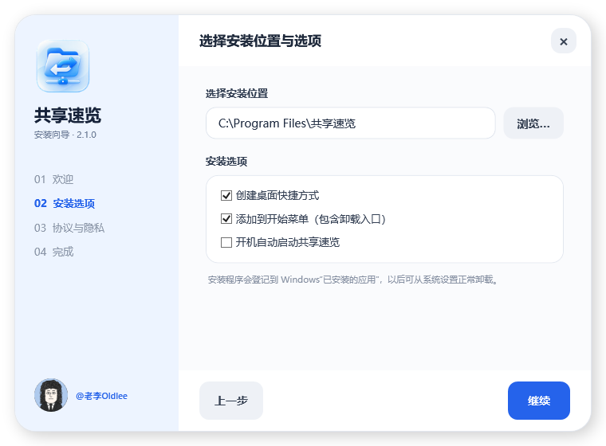

自动替换服务器 IP
只改 UNC 路径开头的服务器地址，共享名、中间目录和最后一级文件夹全部保留。
192.168.1.20→192.168.1.100
一次设置目标 IP，以后粘贴任意 UNC 路径，自动替换服务器地址并直接进入最后一级文件夹。
64 位自包含安装包 · 免费无广告 · MIT 开源
同一份共享资料，可能因办公网络、服务器迁移或不同电脑而使用不同 IP。共享速览只替换服务器部分，后面的完整路径原样保留。
\\192.168.1.20\共享资料\设计部\产品图\春季新品
\\192.168.1.100\共享资料\设计部\产品图\春季新品
下面的转换只在你的浏览器中完成，不会发送到服务器。可以一次放入多条路径。
没有复杂配置，没有学习成本。把重复、琐碎、容易出错的一步交给工具。
只改 UNC 路径开头的服务器地址，共享名、中间目录和最后一级文件夹全部保留。
多条路径一次粘贴，自动识别数量、清理多余符号并去重。
可选开启。复制到有效路径后立即转换并打开，无需再按 Ctrl + V。
两个独立开关，默认均关闭。开启后原样打开，绝不替换 IP。
完整路径指向哪个文件夹，Windows 资源管理器就进入哪个文件夹。
不用时收起，需要时一点即开。支持置顶、开机启动和启动后直接悬浮。
填入你当前要访问的服务器 IPv4 地址，点击“保存”。
从聊天、文档或表格复制一条或多条 UNC 路径。
按 Ctrl + V 或点击按钮，软件完成替换并打开完整目录。
点击图片可查看大图。所有截图使用的都是虚构、脱敏演示数据。
安装时可选择桌面快捷方式、开始菜单和开机启动。阅读用户协议与隐私政策并同意后才可安装。

由老李Oldlee 制作并无偿开源。